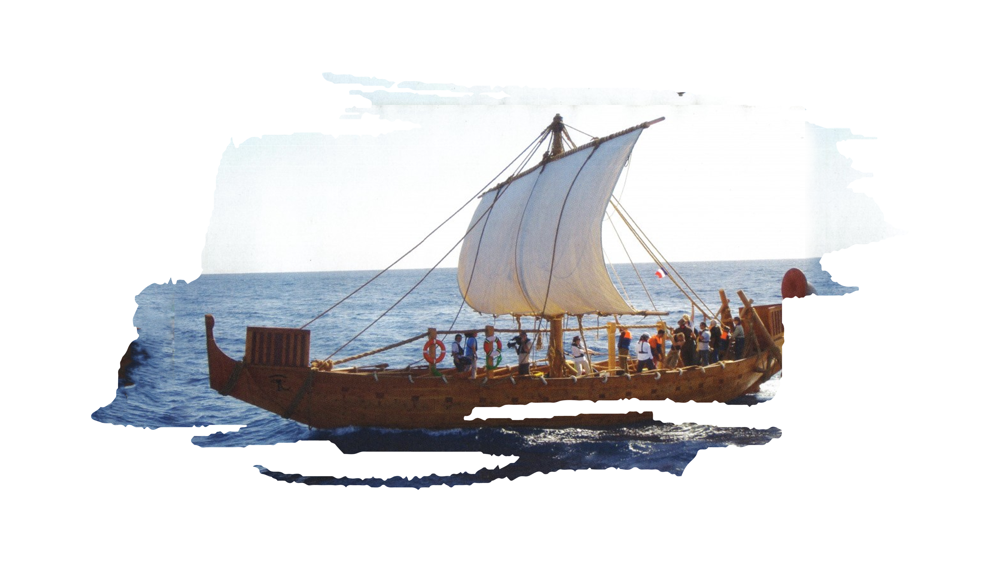
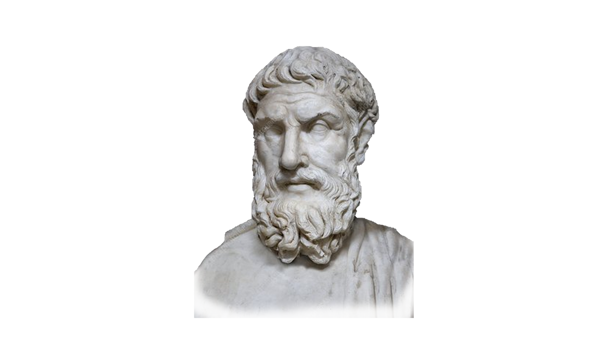

Introduction Video
LET'S EXPLORE THE ANCIENT PERIOD!

Cuneiform
One of the major contributions of the Sumerians is the development of the first writing system known as cuneiform. It is a system that utilizes word pictures and triangular symbols which are carved on clay using wedge instruments and then left to dry. Cuneiform allowed the Sumerians to keep records of things with great historical value or their everyday life. It is also one way of passing their traditions, and their legacy.
Learn more
Hanging Garden
It is one of the seven wonders of the ancient world. King Nebuchadnezzar who took over the throne made this luxurious building as gift to his wife. Today, people can only marvel at the beauty of the famous Hanging Gardens of Babylon form the stories of historians and paintings that portray the place. It was said to be a structure made up of layers upon layers of gardens that contained several species of plants, trees, and vines.
Learn moreCosmetics
Who are fond of cosmetics here? Or familiar about wigs? Of course, we are all familiar with these terms! Cosmetics nowadays are essentials in building your self-confidence, but did you know that the cosmetics that we are using right now is invented by the Egyptians? Although cosmetics in the modern times are used to improve and highlight the facial features of a person, their function in ancient Egypt was for both health and aesthetic.
Learn moreAlarm Clock
Diving further with the contributions of the Greek Civilization is the invention of one of the most utilized gadgets today, the alarm clock. Although the alarm clock during that time does not resembles the present-day clocks, the purpose was just the same- to tell an individual when to stop or start. This invention according to the scientist resembles that of the Egyptians but this is more complex and more accurate.
Learn moreNewspaper
The most famous contribution of the Roman Empire is the newspaper
which is globally
used by different races. The first newspaper is known as gazette. Before the invention of paper,
gazettes were engraved in metal or stone tablets then publicly displayed. Minutes of the meeting were
done in shorthand. It gives the opportunity to enjoy easy access to government's accurate dissemination
of information to the residents.
Gun Powder
The earliest known chemical explosive is gunpowder, also known as black powder to distinguish it from modern smokeless powder. It's made up of sulfur, carbon (in the form of charcoal), and potassium nitrate (saltpeter). Gunpowder has long been used as a propellant in firearms, artillery, rocketry, and pyrotechnics, as well as a blasting agent for explosives used in quarrying and road construction.
Learn more
Summerian
- Sumeria is located on the southernmost tip of ancient Mesopotamia between the Tigris
and Euphrates.
Quick trivia, mesopotamia is formed from the ancient words “meso”, meaning between or in the middle of.
And “potamos”, meaning river. Thus, forms the meaning of ‘in the middle of rivers’, the Tigris and
Euphrates. What are the contributions of the Sumerian civilization in our society? Learn more by
clicking the button below.
Sumerian
Related Information
-
Sumerian Civilization
The Sumerian Civilization is located on the Southernmost tip of Ancient Mesopotamia, known for their high degree of cooperation and desire for great things and being not contented with basic things.
-
Cuneiform
The first ever writing system that utilizes pictures and triangular symbols that are carved on clay using wedge instruments. Primarily used in record keeping.
-
City of Uruk

They also built the first true city in the world called the City of Uruk, a great wonder for the way it was erected. The Sumerians were able to build the city using only mud or clay from the river, which they mixed with reeds, producing sunbaked bricks-a true engineering feat. They used the bricks to make houses that protected them from the harsh weather and to build a wall around the city that prevented wild animals and neighboring raiders from entering.
-
Great Ziggurat of Ur

In the engineering and architectural side, Sumerians were known for the Great Ziggurat of Ur. The Ziggurat, also called the mountain of God, was built in the same manner that they constructed the City of Uruk. Without much building materials, the structure was constructed using sunbaked bricks. The Ziggurat served as the sacred place of their chief god, where only priest was allowed to enter.
-
Population
As population increase, so did the demand for food. The Sumerians were challenged to mass produce items but the elements in the environment seemed uncooperative. It was difficult to get water from the rivers, thus they could not maintain farmlands. Some groups had scarce water supply, while others had problems with flooding caused by the river.
-
Food Security
Aside from the challenge in the demand of food and water, Sumerians had challenges when it comes to transportation. At that time, wheels are not yet invented. Imagine their civilization and way of transportation without wheels? Very hassle!
-
Sail Boats

Their main mode of transportation back then was through waterways such as rivers and seas. Sail Boats were used to carry copious quantities of products and were able to cover large distances. However, they wanted to discover faraway lands to settle since the population was getting larger, and boats were not enough to accommodate more people and products. They needed a mode of transportation that did not require much human resource.
-
Wheel
The Sumerians were able to invent the wheel since the specialized tools needed to create it were already available. The first wheels were not made for transportation but for farm work and food process. With the use of the wheel and axel, mass production was made easier. Farmers were able to mill grains with less effort in less time.
-
Plows
Another farm technology that they invented were the plows. The plow was invented to dig the earth in a faster pace. As the plow beaks the ground, the farmer would just drop the seeds and farm work would already be done
-
First Roads

There are many firsts in the Sumerian civilization. They were also the first civilization the develop the first roads to facilitate faster and easier travel. With this work, the flow of traffic became faster and more organized. They made the roads with the same technology they used in making sunbaked bricks that they laid down on the ground.
-
Educational Attainment
The Sumerians does not have any degree in engineering or in architecture, but they were able to build buildings, road, infrastructure, and many more that are still solid at stable in their time.
-
Sumerian Civilization
Babylonian
Babylonian Civilization emerged near the Tigris and Euphrates River. They rose into power led by King
Hammurabi after conquering the Mesopotamia. The Babylonians were great builders, engineers, and
architects. What do you think are their impact in the development of our society over time? Learn more by
clicking the button below.
Related InformationBabylonian
The Babylonian Civilization emerged near the river because water is one of their
necessities. Water brings food for them, brings energy and beauty, and it also
enable them to travel from one place to another. With the use of river, they can
exchange their goods to other places, and they can also use it to conquer and to
escape.

One of their major contributions is the Hanging Gardens of Babylon, one of the seven
wonders of the ancient world. King Nebuchadnezzar who took over the throne made this
luxurious building as gift to his wife.
Today, people can only marvel at the beauty of the famous Hanging Gardens of Babylon
form the stories of historians and paintings that portray the place. It was said to
be a structure made up of layers upon layers of gardens that contained several
species of plants, trees, and vines. However, no physical evidence has been found to
prove the existence of the Hanging Gardens of Babylon. Its exact location is
unknown.

They also developed advanced mathematics including a base 60 system; and created a
60-second minute, a 60-minute hour and a 360-degree circular angle. The Babylonians
used their sophisticated system of mathematics to map and study the sky. They formed
their version of constellations divided into twelve from one earth year that
inspired the Greeks to develop the zodiacs.
Egyptian
- As we dive deeper to other civilizations, are you all familiar with paper and
ink? Of course,
we are! Thanks to the Egyptian Civilization who started and developed this system of writing
because they were able to make writing easier for the world. Aside from these, what do you think
were their other inventions? Learn more by clicking the button below.
Egyptian
Related Information
-
Egyptian Civilization

Egyptian Civilization is a game-changer in the development of society among civilizations. They were known because of their aesthetics and improvements.
-
Paper or Papyrus
Before, they are using tables made from clay tablets, but they find it fragile, heavy, and delicate to handle. Hence, the Egyptian invention of paper or papyrus was a welcome development. They were able to process the plant to produce thin sheets on which one could write down things. When Egyptians invented the papyrus or the paper, engraving ceased to be used in writing. As a result, the Egyptians invented ink by combining soot with different chemicals to produce inks of assorted colors.
-
About North Africa?
Do you all know that Egyptian civilization was in North Africa? Now you know! Many stories tell about the engineering feats of the Egyptian especially regarding infrastructures established by the Pharaohs.
-
Hieroglyphics
This civilization also developed a system of writing using symbols, known as hieroglyphics! It was adapted from the early writing system established in Mesopotamia because of trade between civilizations the Egyptians believed that this writing systems was provided to them by their gods. Hieroglyphics was the language that tells the modern world of the history and culture of the ancient Egyptians. Their records were well-preserved since they were carved at the walls of pyramids and other important Egyptian structures.
-
Wig
Another cosmetic invention of ancient Egyptian is the wig. Nowadays, wigs are used to enhance the appearance of people who are balding or those who want to try new hair trends. Meanwhile, during the ancient Egyptian times, they were used for health and wellness rather than for aesthetic purposes. They used it to cover their head from the harmful rays of the sun.
-
Water Clock
Another important contribution from them is the water clock. The water clock utilizes gravity that affects the flow of water from on vessel to another. This invention also leads to our modern-day clock through series of improvement done by the succeeding civilization.
-
Egyptian Civilization
.png)
Greek
Many students are excited about the Greek civilization because they think about the Greek Gods and
Goddesses but spoiler alert, they are just myths. Greece is an archipelago in the southeastern part of
Europe. This makes their country difficult to conquer since it is an archipelago, they can hide or
ambush the enemy from various island. What have they invented through these circumstances? Learn more
by clicking the button below.
Related InformationGreek

Greek Civilization can be found in Greece, an archipelago in the Southeastern part
of Europe and known as the birthplace of Western Philosophy. Some of the major
achievements of the Greeks include in-depth works on philosophy and mathematics.
Greek civilization has contributed much to the world especially in the fields of
science and technology.
The first proponents of an atomic theory were the Greek philosophers Leucippus and
Democritus in the field of science and on the field of math they have Pythagoras who
was perhaps the first to realize that a complete system of mathematics could be
constructed and later called Pythagorean Theorem.
Diving further with the contributions of the Greek Civilization is the invention of
one of the most utilized gadgets today, the alarm clock. Although the alarm clock
during that time does not resembles the present-day clocks, the purpose was just the
same- to tell an individual when to stop or start. This invention according to the
scientist resembles that of the Egyptians but this is more complex and more
accurate.

Have you ever heard of watermill? It is also considered as one of the most important
contributions of the Greek civilization to the world. They were commonly used in
agricultural processes like milling of grains which is necessary form of food
processing during that time. Mass production of rice, cereals, flours and the like
became common with the help of watermills. Modern-day watermills also help for
converting mechanical energy into electricity which also leads to invention of
windmill and turbine.
Romanian
- Roman Empire was perceived to be the strongest political and social entity
in the west.
Political because of its huge population, territory, and society because of their religion.
Did religion become their power in governing and colonizing nearby civilizations and nations?
What do you think are their contributions? Learn more by clicking the button below.
Sumerian
Related Information
-
Political and Social Entity
Roman Empire was perceived to be the strongest political and social entity in the west. Political because of its huge population, territory, and society because of their religion. It was considered the cradle of politics and governance during the period. Because the Roman Empire was so large, other civilizations looked up to it as their model, in terms of legislation and codified law. That is why many other civilizations were conquered by the Roman Empire, because of its existing laws which make it more complex and more stable, compared to the other civilizations or empire.
-
Newspaper
They made the first newspaper known as gazette. These are engraved in metal or stone tablets to be displayed publicly. The minutes of the meeting were done in shorthand, and they were able to enjoy easy access to government information through this.
-
Bound Books or Codex
Julius Caesar started the tradition of stacking up papyrus to form pages of a book called bound books or codex. They were able to provide covers to protect the papyrus made of wax by animal skin for it was proved to be stronger and longer lasting.
-
Political and Social Entity
Chinese
Diving to the oldest civilization in Asia, if not the world – the Chinese civilization! It is also
known as the middle kingdom. China is located on the far east of Asia. It was very famous among
the other ancient civilization because of its silk trade. What are the contributions of the
Chinese Civilization? Learn more by clicking the button below.
Related InformationChinese
We are now diving to the oldest civilization in Asia, if not the world. The Chinese
civilization! It is also known as the middle kingdom. China is located on the far
east of Asia. It was very famous among the other ancient civilization because of its
silk trade.
TIn 8th century, Chinese invented by accident the gunpowder used in weapons. It
helped them defend themselves. Gun powders and firecrackers were believed to scare
away evil spirits in this civilization.


{kind=link}
{kind=link}
{kind=link}
{kind=link}
{kind=link}